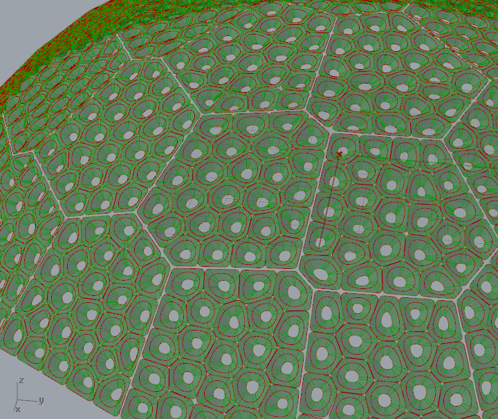

Contact: gregory.schlomoff@gmail.com
Flow And Wonder is an interactive art installation created for Burning Man 2015. An 8 feet wide mushroom sculpture made of 40 machine-carved plywood panels illuminated by 1027 color LEDs, creating a beautiful surface where the light flows and dance.
Design Process
The structure was designed in Rhino with extensive use of the Grasshopper plugin. We used algorithmic modeling techniques such as Lloyd's Relaxation to create a beautiful, organic-looking structure.
The mushroom started as a simple dome. We imported the dome in grasshopper and generated 40 random points on its surface.
We computed the 3D Voronoi tessellation of these 40 points, keeping only the intersection between the Voronoi cells and the dome. This gives us a 2D Voronoi tessellation over the surface of the dome.
We then proceeded with Lloyd's algorithm. As the algorithm iterates, the cells push each other and move around until they reach an equilibrium where all cells have approximately the same area, yet no two cells are identical.
As the previous steps happen on the surface of a dome, the resulting cells aren't flat: they follow the curvature of the dome. We need to flatten these cells into panels with the constraint that each panel should be touching its neighbors edge to edge, with no gaps or holes between them.
This is a complex algorithmic problem for generic surfaces, but Grasshopper includes a simple algorithm that works well for domes. This gives us 40 flat panels that, when assembled together, will form the surface of our mushroom.

We then repeat the Voronoi tessellation / Lloyd's algorithm technique on the surface of each panel to compute the cells that will be carved out of the panels.
Finally, we generate a couple of smoothed outlines from these cells that we will use in a lofting operation. Combined with an extrusion of the panel, this will define the final surface of the mushroom.

We switched to Autodesk Inventor to design the mushroom legs as well as the battery cabinet. Inventor has a great interoperability with Rhino, being able to read Rhino surfaces natively.
Manufacturing Process
We used Autodesk Inventor HSM to generate the CNC toolpaths. This was a labor-intensive process as we had to manually click multiple time on each of the 1027 cells for which we wanted to generate the toolpaths.
Each panel took approximately 40 minutes to machine. After that, we sanded everything with a Dremel tool using 80 grit sanding drums.
The whole structure was made on a Shopbot CNC wood router at TechShop SF. We used 7 4x8' sheets of 3/4 inch birch plywood purchased from nearby Mission Discount Builders Supply. As we had no car, we had to haul the 30 pounds sheets from the store to TechShop on a small dolly... Without a doubt, a good way to start the day.
5 panels freshly completed on the Shopbot CNC.First panel completed.
Close-up of the first panel.
Top 8 panels.
Laurent is stapling the LED holders. They are made of 4mm corrugated plastic cut on the same Shopbot CNC as we used for the plywood.
2,054 staples later... All 40 panels are ready. Thanks Laurent!
The LED strings, cut to the right size. Each string has a piece of tape attached numbered with the panel it's supposed to go to. We used WS2811 LED strings purchased from Aliexpress.com.
Popping the LEDs in the holders and connecting a couple of panels together.
Testing the LEDs.
The feet of the mushroom. Making them was much easier than making the panels, but this time we had to borrow a friend's car to transport them from TechShop to my garage. Amazingly, I managed to get 3 parking tickets in the process...
Top of the battery cabinet, laser-etched with precision by Morgan. The two mandalas mark the location of the motion sensors.
Build team selfie! From left to right: Yoan, Greg and Laurent.
Napping in the shade...
Inside view of the mushroom cap. Note the cable ties attaching the panels together.